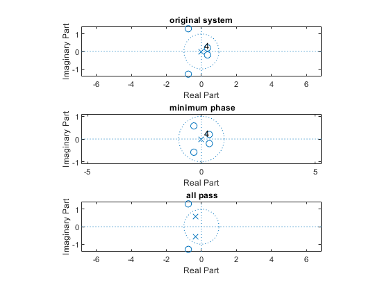
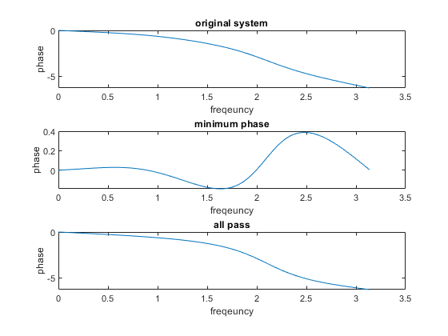
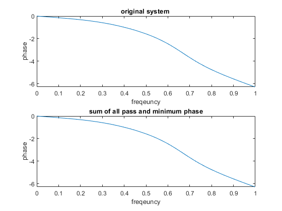
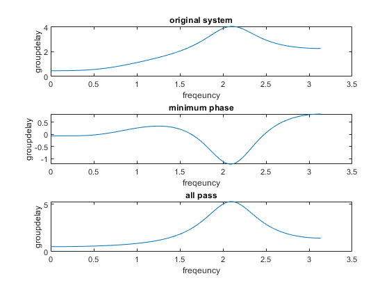
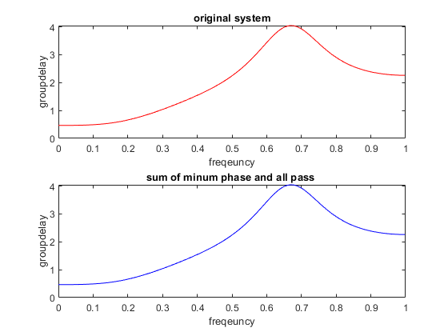
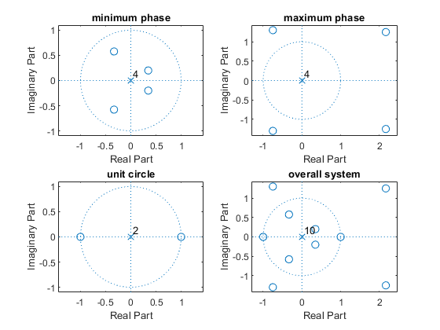
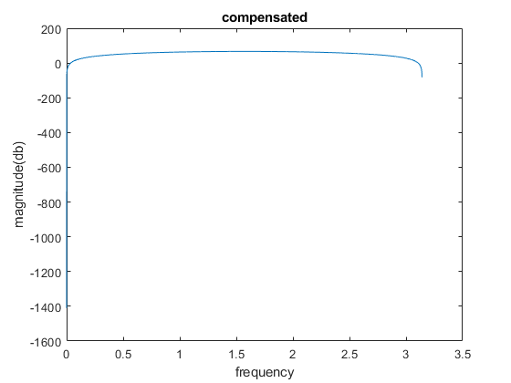

Contents
clear recent data
clear,clc,close all
part 1 zeros and poles of minimum phase and all pass system
b=[0.4*exp(1j*2*pi*-1/12),0.4*exp(1i*2*pi*1/12),1.5*exp(1j*2*pi*-1/3),1.5*exp(1j*2*pi*1/3)];
b1=[0.4*exp(1j*2*pi*-1/12),0.4*exp(1j*2*pi*1/12),(1/1.5)*exp(1j*2*pi*-1/3),(1/1.5)*exp(1j*2*pi*1/3)];
b2=[1.5*exp(1j*2*pi*-1/3),1.5*exp(1j*2*pi*1/3)];
a2=[(1/1.5)*exp(1j*2*pi*-1/3),(1/1.5)*exp(1j*2*pi*1/3)];
poly1=poly(b);
poly2=poly(b1);
poly3=poly(b2);
poly4=poly(a2);
figure()
subplot(3,1,1)
zplane(poly1)
title('original system')
subplot(3,1,2)
zplane(poly2)
title(' minimum phase')
subplot(3,1,3)
zplane(poly3,poly4)
title(' all pass')

part 1 minimum phase ,all pass,original system's phase
[h,w]=freqz(poly1,1);
[h1,w1]=freqz(poly2,1);
[h2,w2]=freqz(poly3,poly4);
figure()
subplot(3,1,1)
plot(w,phase(h))
title('original system')
xlabel('freqeuncy')
ylabel('phase')
subplot(3,1,2)
plot(w1,phase(h1))
title('minimum phase')
xlabel('freqeuncy')
ylabel('phase')
subplot(3,1,3)
plot(w2,phase(h2))
title('all pass')
xlabel('freqeuncy')
ylabel('phase')
phasesum=(phase(h1))+(phase(h2));
figure()
subplot(2,1,1)
plot(w/pi,phase(h))
xlabel('freqeuncy')
ylabel('phase')
title('original system ')
subplot(2,1,2)
plot(w/pi,phasesum)
xlabel('freqeuncy')
ylabel('phase')
title('sum of all pass and minimum phase')
 
part 1 minimum phase ,all pass,original system's groupdelay
[gd,w] = grpdelay(poly1,1);
[gd1,w1] = grpdelay(poly2,1);
[gd2,w2] = grpdelay(poly3,poly4);
figure()
subplot(3,1,1)
plot(w,gd)
xlabel('freqeuncy')
ylabel('groupdelay')
title('original system')
subplot(3,1,2)
plot(w1,gd1)
xlabel('freqeuncy')
ylabel('groupdelay')
title('minimum phase')
subplot(3,1,3)
plot(w2,gd2)
xlabel('freqeuncy')
ylabel('groupdelay')
title('all pass')
gdsum=gd1+gd2;
figure()
subplot(2,1,1)
plot(w/pi,gd,'r')
xlabel('freqeuncy')
ylabel('groupdelay')
title('original system')
subplot(2,1,2)
plot(w/pi,gdsum,'b')
xlabel('freqeuncy')
ylabel('groupdelay')
title('sum of minum phase and all pass ')
 
part 2 FIR GLP3
zeros=[0.4*exp(1j*2*pi*-1/12),0.4*exp(1i*2*pi*1/12),1.5*exp(1j*2*pi*-1/3),1.5*exp(1j*2*pi*1/3),(1/0.4)*exp(1j*2*pi*-1/12),(1/0.4)*exp(1i*2*pi*1/12),(1/1.5)*exp(1j*2*pi*-1/3),(1/1.5)*exp(1j*2*pi*1/3),1*exp(1i*pi),1];
bb=poly(zeros);
minimumzeros=[0.4*exp(1j*2*pi*-1/12),0.4*exp(1i*2*pi*1/12),(1/1.5)*exp(1j*2*pi*-1/3),(1/1.5)*exp(1j*2*pi*1/3)];
minimumpoly=poly(minimumzeros);
maxzeros=[1.5*exp(1j*2*pi*-1/3),1.5*exp(1j*2*pi*1/3),(1/0.4)*exp(1j*2*pi*-1/12),(1/0.4)*exp(1i*2*pi*1/12)];
maxpoly=poly(maxzeros);
unitcirclezeros=[1*exp(1i*pi),1];
polyunit=poly(unitcirclezeros);
figure()
subplot(2,2,1)
zplane(minimumpoly)
title('minimum phase')
subplot(2,2,2)
zplane(maxpoly)
title('maximum phase')
subplot(2,2,3)
zplane(polyunit)
title('unit circle')
subplot(2,2,4)
zplane(bb)
title('overall system')

compensation
[h2,w2]=freqz(maxpoly,1,0:1/1000:pi);
[h1,w1]=freqz(minimumpoly,1,0:1/1000:pi);
[h,w]=freqz(bb,1,0:1/1000:pi);
h1=abs(h1);
h1=h1.*h1;
h1=1./h1;
h=abs(h);
ht=h.*h1;
figure()
plot(w,20*log(abs(ht)))
xlabel('frequency')
ylabel('magnitude(db)')
title('compensated')
